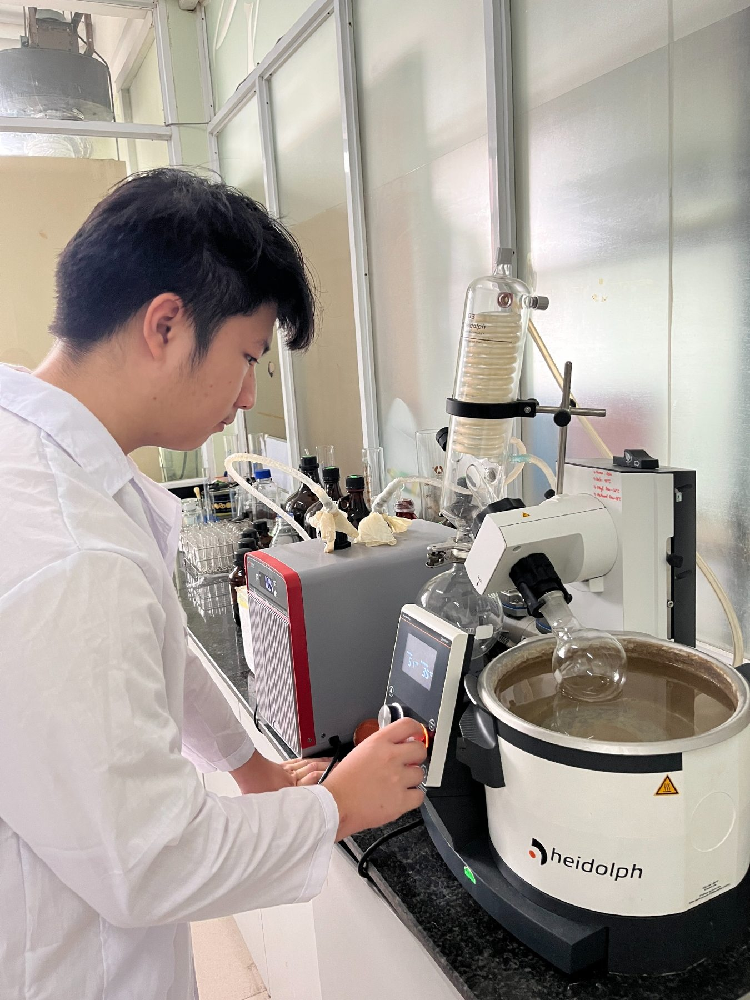
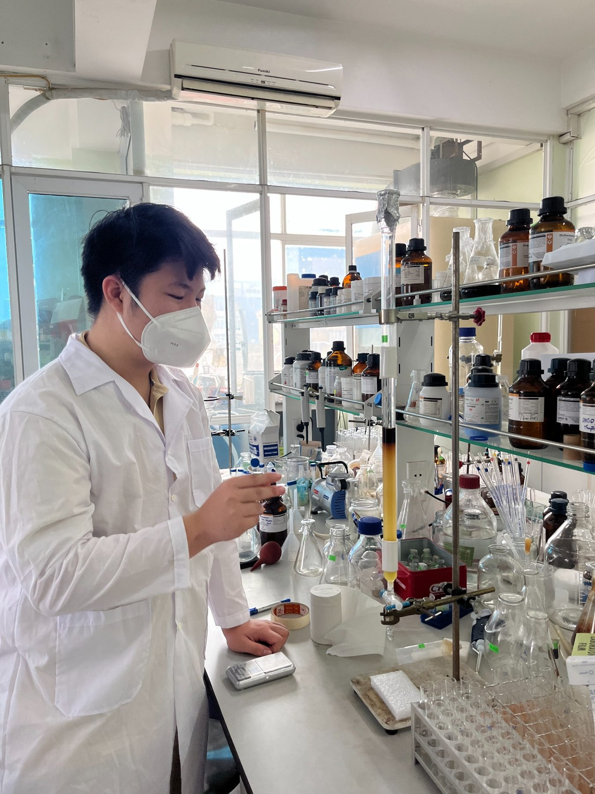
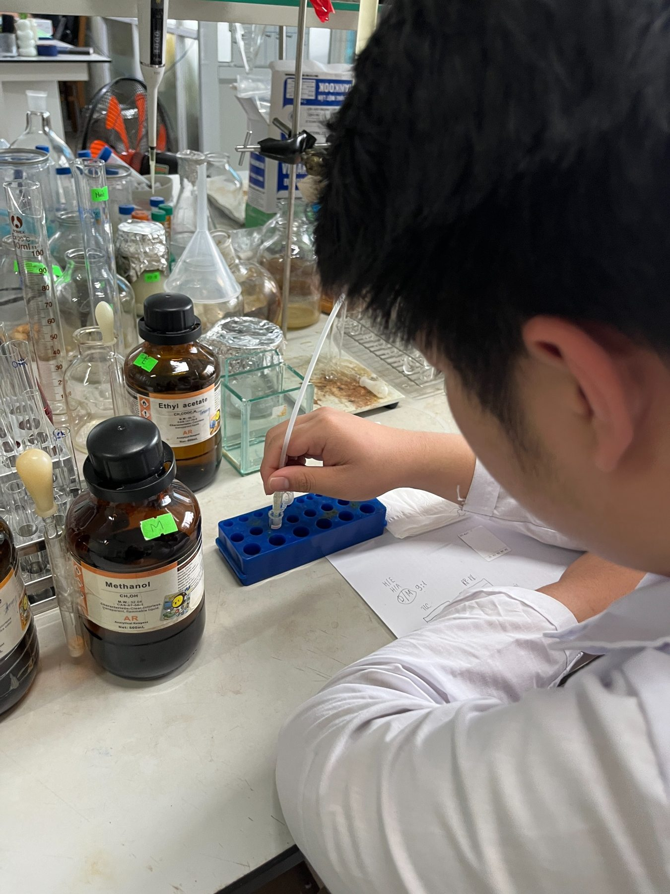
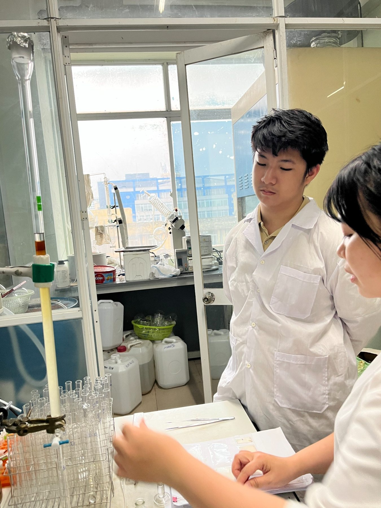
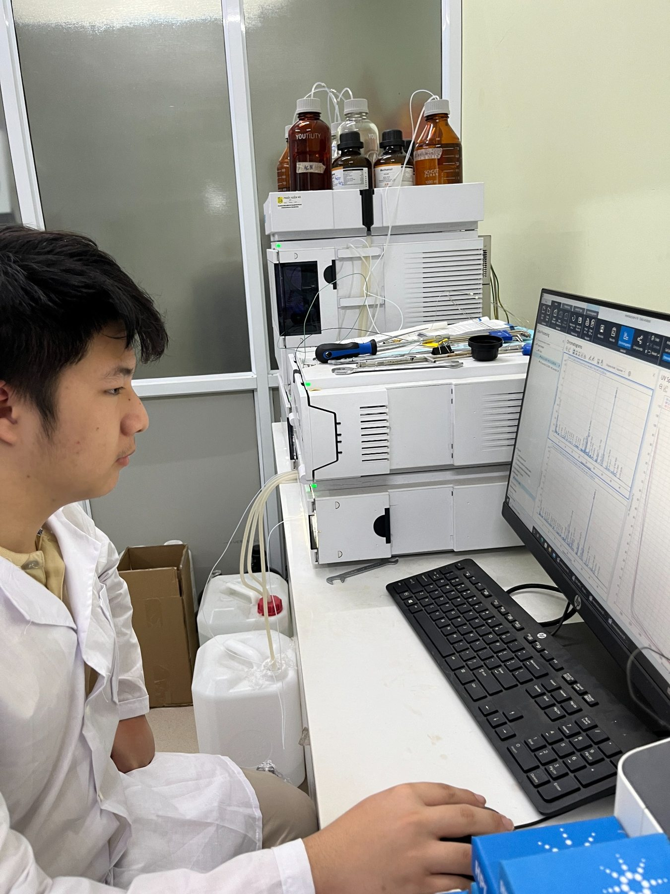
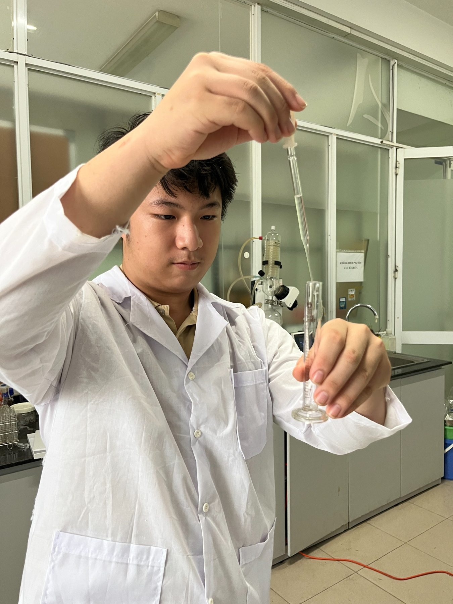
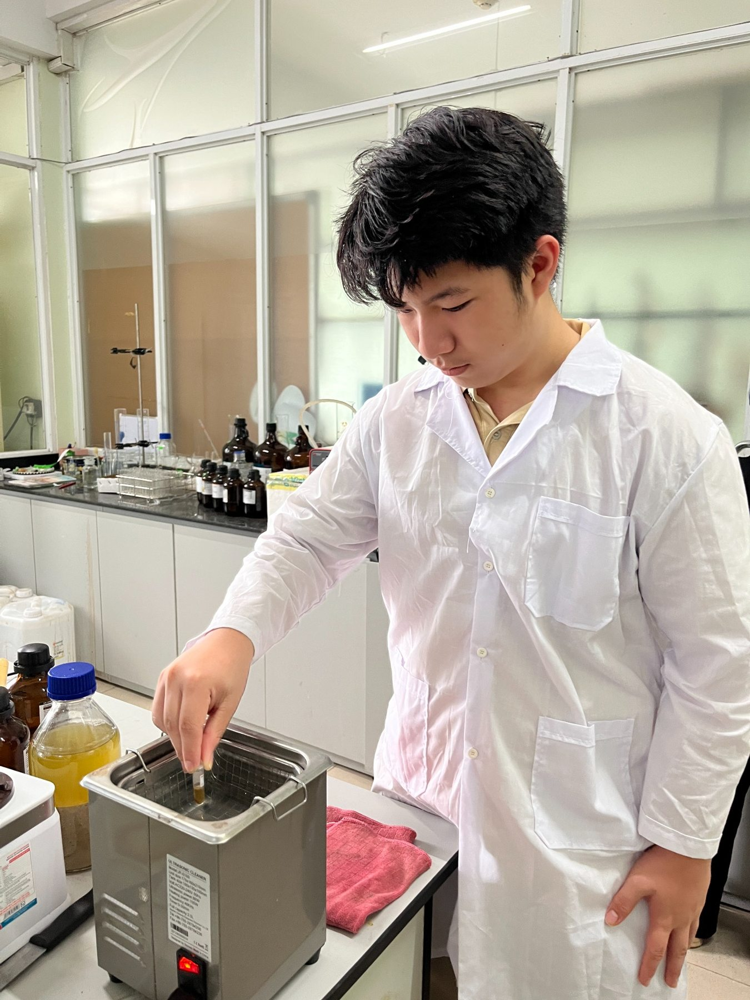
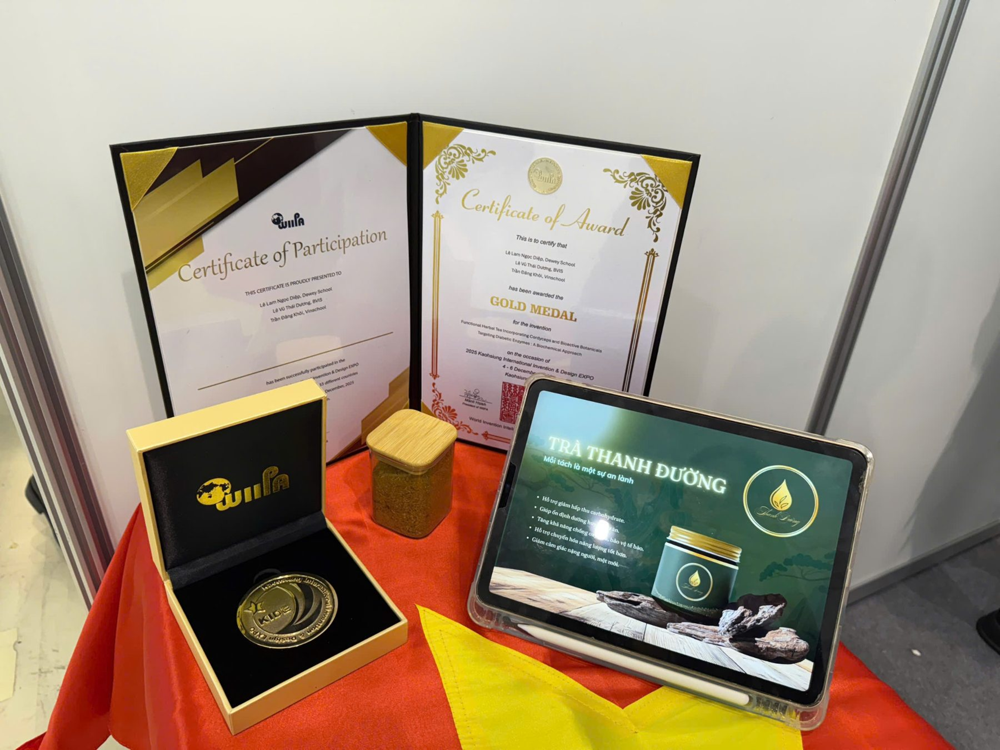

Functional Herbal Tea & Diabetic Enzymes
An independent biochemical research and innovation project.
Research in action
A photographic record of laboratory work and the project’s final presentation. The images document practical experimentation, work with laboratory equipment, and the Gold Medal recognition at KIDE 2025.







Innovation & recognition

Project title
Functional Herbal Tea Incorporating Cordyceps and Bioactive Botanicals Targeting Diabetic Enzymes: A Biochemical Approach
Research experience
The project received a Gold Award at the Kaohsiung International Invention & Design Expo (KIDE) in 2025. It is independent of N8ure Organization.
Notes & next steps
The project abstract, experimental approach and findings can be added after review.
More project materials, figures, methods and reflections can be added after review.
← Back to research